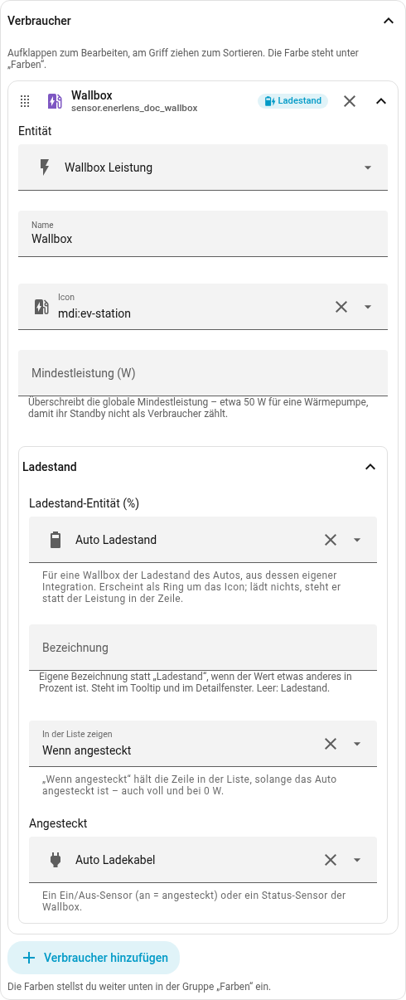
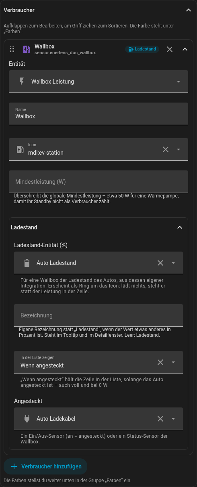

consumers:
- entity: sensor.wallbox_leistung
name: Wallbox
icon: mdi:ev-station
position: top # fest oben (top | bottom)
show: condition # in der Liste halten: always | condition
condition: # solange das Kabel steckt
entity: binary_sensor.auto_ladekabel
operator: "="
value: "on"
charge:
soc: sensor.auto_ladestand # das Auto, in %Wallbox und E-Auto
Eine Wallbox ist ein Verbraucher wie jeder andere. Den Ladestand des Autos liefert die Integration des Autos, nicht die Wallbox – Home Assistant verknüpft beide nicht, deshalb wird dem Verbraucher gesagt, welches Auto zu ihm gehört.
Zum Ausprobieren: Die Wallbox lädt eine Minute lang, der Ring um ihr Icon füllt sich; dann pausiert sie eine halbe Minute, und statt der Leistung steht der Ladestand in der Zeile. Ein Tipp auf die Zeile zeigt in Home Assistant Leistung und Ladestand im Verlauf.
So sieht das in YAML aus:
Im Editor klappt der Verbraucher auf; unter Darstellung stehen Position in der Liste, In der Liste zeigen mit der Bedingung und unter Ladestand die Ladestand-Entität (%):


Ein dünner Ring um das Icon zeigt den Ladestand. Lädt das Auto, zeigt die
Zeile die Leistung, sonst stattdessen den Ladestand – die Zeile braucht also
keinen zusätzlichen Platz. Mit der Bedingung bleibt die Zeile in der Liste,
solange das Auto angesteckt ist, auch voll und bei 0 W; mehr dazu unter
Anpinnen und in der Liste halten. Die Bedingung darf auch auf einen Status-Sensor der Wallbox
schauen: operator: "!=" mit value: [available, none] heißt „angesteckt,
außer bei diesen Zuständen". Schläft das Auto und ist sein Sensor
nicht verfügbar, erscheint der letzte bekannte Ladestand grau. Mit der Maus
über dem Icon steht der Wert; ein Tipp auf die Zeile öffnet ein Fenster mit
der Leistung und darunter dem Ladestand (siehe Energie); im Editor
steht es beim Verbraucher unter Ladestand. Das geht nicht nur mit Autos –
eine Powerstation funktioniert genauso, ein 3D-Drucker mit seinem
Druckfortschritt auch. Dann passt „Ladestand“ nicht: Unter Bezeichnung (in
YAML charge.label) steht stattdessen etwa „Druckfortschritt“ – im Tooltip und
im Detailfenster.
Anpinnen und in der Liste halten
Das gilt für jeden Verbraucher, nicht nur für die Wallbox.
Position (position): top oder bottom stellt die Zeile fest oben oder
unten in die Liste; mehrere stehen in der Reihenfolge der Konfiguration, im
Editor per Ziehen sortiert. Ohne Angabe sortiert sich die Zeile nach Leistung.
Die Position entscheidet nur über den Platz, nicht darüber, ob die Zeile
erscheint.
In der Liste zeigen (show): Ab seiner Mindestleistung steht ein Verbraucher
ohnehin in der Liste. always hält ihn zusätzlich immer dort, condition nur,
solange die Bedingung erfüllt ist – auch bei 0 W. Keine Einstellung blendet
einen Verbraucher aus, der Leistung zieht.
Bedingung (condition): ein Sensor, ein Operator und ein Wert. "=" und
"!=" nehmen einen oder mehrere Zustände („ist einer davon" / „ist keiner
davon"), ">", "<", ">=" und "⇐" genau eine Zahl, etwa
sensor.batterie_spannung ">" 10.5. Die Operatoren stehen in YAML in
Anführungszeichen. Ist der Sensor kurz nicht verfügbar, gilt seine letzte
Antwort. Wer mehr braucht – einen Bereich, ein Attribut, zwei Bedingungen –,
baut sich einen Helfer in Home Assistant und nimmt ihn als Sensor.
Höchstzahl (max_consumers): Gehaltene Zeilen zählen mit und bekommen ihre
Plätze zuerst, die übrigen füllen die stärksten Verbraucher. Halten mehr Zeilen,
als die Höchstzahl erlaubt, erscheinen trotzdem alle gehaltenen – der Editor
sagt dann, dass andere Verbraucher nicht mehr erscheinen.
Im Energie-Modus gelten Position und always genauso; eine Bedingung beschreibt
den Zustand jetzt und wird dort nicht ausgewertet.
Ältere Schreibweise: charge.show mit plugged und unplugged funktioniert
weiter und bedeutet dasselbe wie show und condition. Ändert man den
Verbraucher im Editor, schreibt er ihn in der neuen Form.